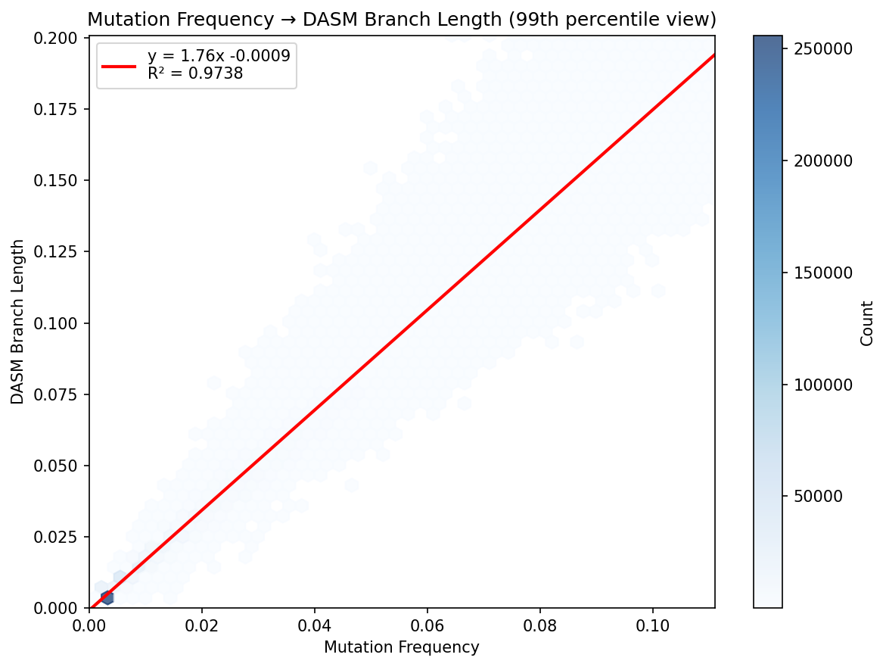

We find a remarkably linear relationship between raw mutation frequency and DASM-inferred branch length, with \(R^2 = 0.974\). The fitted relationship is:
\[t_{\text{DASM}} = 1.76 \cdot f_{\text{mut}} - 0.001\]
where \(f_{\text{mut}}\) is the fraction of nucleotide sites that differ between parent and child sequences.
The DASM (Deep Amino acid Selection Model) predicts the probability of observing a child sequence given a parent sequence. For a codon at position \(j\) mutating to codon \(c\), the probability is:
\[\ell_{j,c}(t, X) = p_{j,c}(t, X) \times f_{j,a}(\bar{X})\]
where:
The neutral mutation probability uses a Poisson model. For a nucleotide site \(i\):
where \(\lambda_i\) is the site-specific mutation rate from the SHM model and \(s_{i,\beta}\) is the substitution probability to nucleotide \(\beta\).
For a codon (3 nucleotide sites), the probability of a specific codon change is the product of individual nucleotide probabilities.
For small branch lengths, \(1 - e^{-\lambda_i t} \approx \lambda_i t\). Summing over all \(N\) nucleotide sites:
\[\mathbb{E}[\text{mutations}] \approx t \sum_{i=1}^{N} \lambda_i = t \cdot N \cdot \langle \lambda \rangle\]
Therefore:
\[f_{\text{mut}} = \frac{\mathbb{E}[\text{mutations}]}{N} \approx t \cdot \langle \lambda \rangle\]
This predicts a linear relationship \(t \propto f_{\text{mut}}\) with slope \(1/\langle \lambda \rangle\).
Selection factors \(f_{j,a} < 1\) on average (most mutations are deleterious). This reduces the probability of observing mutations:
\[P(\text{mutation}) \propto t \cdot \lambda \cdot f\]
To explain \(N\) observed mutations when \(\langle f \rangle < 1\), the model requires a longer branch length \(t\) to compensate. The fitted slope of 1.76 implies:
\[\langle \lambda \rangle \cdot \langle f \rangle \approx \frac{1}{1.76} \approx 0.57\]
This makes biological sense: observed mutations are approximately 57% as likely as neutral expectation due to purifying selection.
Despite the model’s complexity—site-specific rates \(\lambda_i\), codon table degeneracy, position-dependent selection, and products of nucleotide probabilities—the aggregate behavior is remarkably linear. This occurs because:
| Parameter | Value |
|---|---|
| Slope | 1.7578 |
| Intercept | -0.0009 |
| \(R^2\) | 0.9738 |
| RMSE | 0.0065 |
The near-zero intercept confirms the relationship passes through the origin as expected (zero mutations \(\Rightarrow\) zero branch length).
Residuals by mutation frequency decile show minimal systematic pattern:
| Decile | Mean Residual |
|---|---|
| 0 (lowest) | +0.0007 |
| 1 | +0.0007 |
| 2 | +0.0007 |
| 3 | +0.0006 |
| 4 | +0.0002 |
| 5 | -0.0001 |
| 6 | -0.0005 |
| 7 | -0.0012 |
| 8 | -0.0016 |
| 9 (highest) | +0.0005 |
The slight negative residuals at intermediate-high mutation frequencies may reflect saturation effects (multiple hits at the same site) not fully captured by the linear approximation.

The plot shows the relationship between raw mutation frequency (x-axis) and DASM-inferred branch length (y-axis) for 742,377 training pairs. Axes are trimmed to the 99th percentile for clarity. The red line shows the linear fit with \(R^2 = 0.974\).
The strong linear relationship between mutation frequency and DASM branch length provides a useful rule of thumb:
\[t_{\text{DASM}} \approx 1.76 \times f_{\text{mut}}\]
This relationship emerges from the model’s structure despite considerable underlying complexity, and reflects the combined effect of site-specific mutation rates and purifying selection operating on antibody sequences.
Full source: docs/branch_length_regression.py
def mutation_frequency(parent_seq, child_seq):
"""Compute fraction of nucleotide sites that differ."""
mismatches = sum(1 for p, c in zip(parent_seq, child_seq) if p != c)
return mismatches / len(parent_seq)The DASM branch length CSVs contain only values (no identifiers),
stored in the same row order as the training data. We use
train_val_df_of_multiname to replicate the exact loading
sequence:
from dnsmex.dxsm_data import train_val_df_of_multiname
# Load PCPs with train/val split matching training
pcp_df = train_val_df_of_multiname("v1jaffeCC+v1tangCC")
# Load DASM branch lengths
train_bls = pd.read_csv(f"{model_dir}/{model_name}.train_branch_lengths.csv")
val_bls = pd.read_csv(f"{model_dir}/{model_name}.val_branch_lengths.csv")
# Match by row order
train_df = pcp_df[pcp_df["in_train"]].reset_index(drop=True).copy()
train_df["dasm_branch_length"] = train_bls["branch_length"].valuesfrom scipy import stats
result = stats.linregress(df["mut_freq"], df["dasm_branch_length"])
# result.slope = 1.7578
# result.intercept = -0.0009resid = df["dasm_branch_length"] - (result.slope * df["mut_freq"] + result.intercept)
df["decile"] = pd.qcut(df["mut_freq"], 10, labels=False)
for decile in range(10):
mask = df["decile"] == decile
print(f"Decile {decile}: mean residual = {resid[mask].mean():+.6f}")